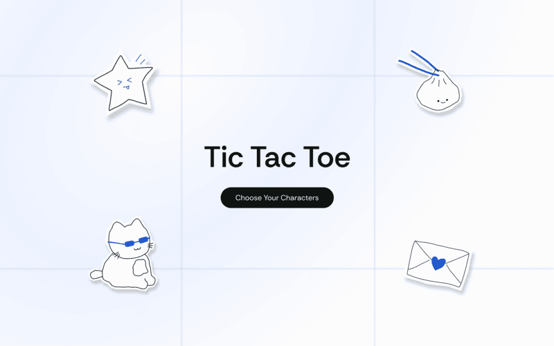
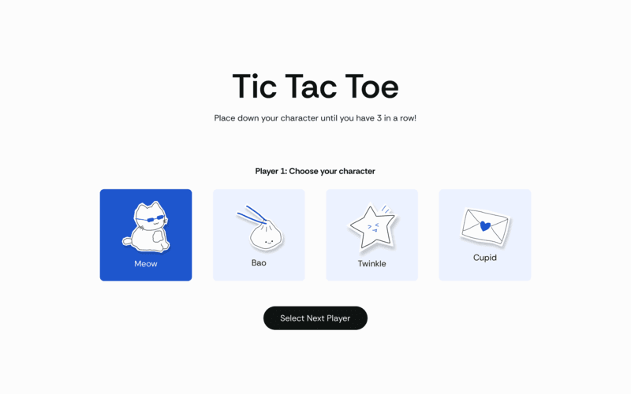
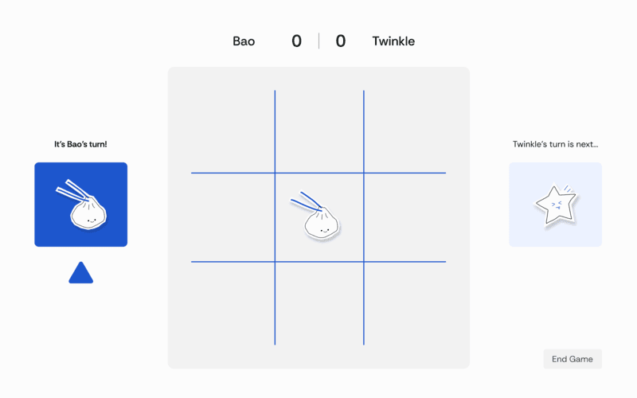

With my updated visual designs, I want users to have a complete end to end experience playing tic tac toe. In my previous iteration, users had to immediately choose their players, but for my revision, I'm adding an initial screen to create a clearer introduction to the game. Additionally, I'm providing the characters all names so that they feel more personalized and fun to choose from. Once you're on the actual game board, I've adjusted the layout so that the player's scores show up at the top and center instead of the bottom left so that there's more emphasis on wins in the game. I've also added a arrow to point to the player whose turn it is. I plan to add an animation where this arrow moves up and down to add more dimension and stronger hierarchy to emphasize each player's turn.